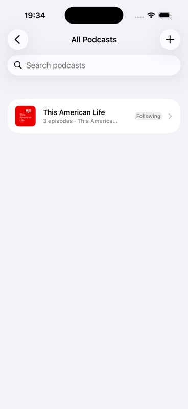

LIB-001pass_with_issues · 2 screenshotsPod0 Validation
Pod0 Scenario Validation Report
264 generated scenario pages; 4 now include run evidence. Overall suite readiness remains incomplete until every scenario is evidence-backed and cluster-reviewed.
1fail
261incomplete
2pass_with_issues
Scenario Page System
Each BDD catalog scenario now has a stable page, JSON record, source link, structured flow steps, attempts, evidence inventory, skill-grounded quality review, product-cluster coherence, readiness gates, and rollup membership.
Evidence-Backed Scenarios
Screenshot Evidence Gallery
The published site currently exposes 39 image assets: 13 scenario-run screenshots, 2 live report verification screenshots, 10 scenario attachment screenshots, and 14 product-state survey screenshots. Only 4 of 264 scenario records have screenshot evidence attached so far; the rest remain incomplete until their flows are run and reviewed.
Audit Gap Snapshot
Background audit confirms the report structure is broad but evidence remains thin: 264 scenario records exist, 4 are evidence-backed, 264 still lack accessibility audit artifacts, 260 lack core screenshot/UI-tree/log/command evidence, 156 lack metric traces, and 74 lack cassette evidence. The next non-negotiable work is evidence ingestion, revalidation, cassette normalization, OS integration catalog expansion, and real accessibility/performance artifacts.